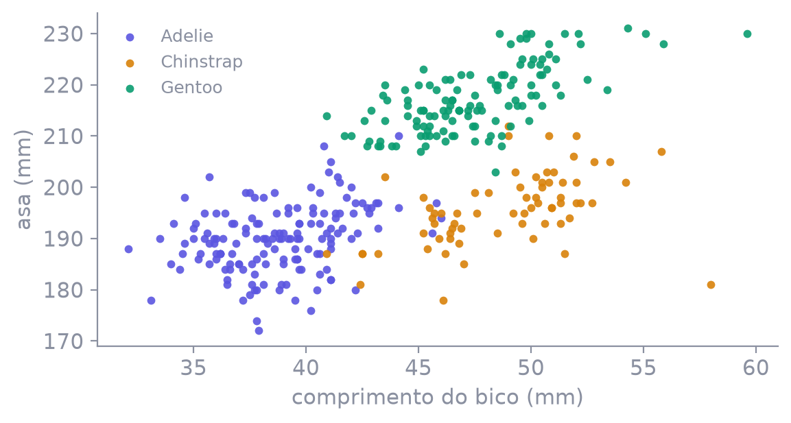

Programação para Ciência de Dados · 2026.1
Introdução à Machine Learning
O que é machine learning, o que é um modelo,
e um classificador de pinguins medido em mais de uma partição
Aula ML 01Palmer Stationregressão logística
Use → ← · M índice · P PDF · F tela cheia
Antes do arquivo
O que é machine learning
Machine learning
Em vez de escrever a regra à mão, o computador ajusta uma regra olhando exemplos. Essa regra serve para prever ou decidir em casos novos.
O caminho clássicovocê programa o passo a passo. A regra começa na sua cabeça.
O caminho do MLvocê traz dados com padrão. A regra sai do ajuste nesses dados.
A peça central
Modelo = função entrada → saída
Modelo
Recebe entradas e devolve uma saída. Depois do ajuste, ele mapeia um caso novo sem você reescrever a regra.
Entrammedidas do pinguim — comprimento do bico, profundidade, asa, massa.
Saia espécie: Adelie, Chinstrap ou Gentoo.
Ainda não abrimos o arquivo. O pinguim aqui só ilustra o mapeamento: entradas viram saída.
Em linguagem de rua
Exemplo: filtro de spam
Na prática
Ele aprendeu o padrão. Não é uma lista de se-então escrita na mão — é um ajuste feito em cima de exemplos.
Não é assimRegra manual: “se tiver a palavra grátis, é spam”. Alguém inventou a regra.
É assimO filtro olhou milhões de e-mails já marcados. Ajustou sozinho os pesos que separam spam de legítimo.
Chega um e-mail novo: ele aplica o padrão aprendido e responde spam ou legítimo. Mesma ideia do gato → rótulo e do pinguim → espécie.
Três famílias · e onde cada modelo mora
Supervisionado, não supervisionado e reforço
SupervisionadoExiste coluna de resposta. O modelo aprende a prever essa coluna.
Modelos: regressão linear · regressão logística · árvores de decisão · florestas aleatórias · modelos de séries temporais (com alvo no tempo)
Não supervisionadoNão existe essa coluna. O trabalho é achar estrutura — agrupamento.
Modelos: k-means · DBSCAN · PCA
Por reforçoAprende por recompensa e punição em interações. Ex.: agente que tenta caminhar — fica de pé, ganha; cai, perde.
Modelos: Q-learning · DQN · PPO
A regra da aula
Generalização: acertar o que o modelo não viu
Aprender
O modelo ajusta uma regra nos exemplos. Essa regra tem de valer para um exemplo que não entrou no ajuste.
O que ele viuserve para ajustar a regra. Acertar aqui é o mínimo, e não conta como evidência.
O que ele não viué a prova. A métrica que importa é a deste lado.
O ciclo em seis caixas
Do dado à predição
Perguntaqual é a espécie
Dadosfeatures + alvo
Análiseexploração, limpeza, cleanup
Separaçãosplit em train e test
Treinologística, árvore, kNN…
Testeinferência · predict
A partir daqui o foco da aula é Separação → Treino → Teste: partir os dados, ajustar o modelo e medir no que ficou de fora.
Toda quinta-feira · 6 aulas + oficinas + devolutiva
Cronograma
| # | Data | Título |
|---|
| 1 | 01/10 | Introdução a machine learning |
| 2 | 08/10 | Regressão linear e MLflow |
| 3 | 15/10 | Classificação* (sem aula presencial) |
| 4 | 22/10 | Árvores e florestas* (sem aula presencial) |
| 5 | 29/10 | Séries temporais |
| 6 | 05/11 | Agrupamento e deploy |
| 7 | 12/11 | Oficina para o trabalho |
| 8 | 19/11 | Oficina para o trabalho e entrega |
| 9 | 26/11 | Devolutiva dos trabalhos |
caderno
Palmer Archipelago · penguins_size.csv
Dataset: penguins_size.csv
| bico (mm) | prof. (mm) | asa (mm) | massa (g) | species |
|---|
| 0 | 39,1 | 18,7 | 181 | 3.750 | Adelie |
| 1 | 39,5 | 17,4 | 186 | 3.800 | Adelie |
| 2 | 40,3 | 18,0 | 195 | 3.250 | Adelie |
| 3 | — | — | — | — | Adelie |
344 linhas, três espécies. Ilha e sexo ficam de fora: o primeiro modelo usa só as quatro medidas, para caber num gráfico.
caderno
Antes de qualquer modelo · código no caderno
Exploração: dispersão bico × asa
| species | n |
|---|
| Adelie | 151 |
| Gentoo | 123 |
| Chinstrap | 68 |
Contagens nas linhas com as quatro medidas preenchidas.

Antes de limpar · a pergunta do caso
O que queremos com este dataset?
Objetivo
Chega um pinguim novo. Temos as medidas dele. Queremos classificar a espécie: Adelie, Chinstrap ou Gentoo.
Entracomprimento do bico, profundidade do bico, comprimento da asa, massa
Saia espécie prevista
É um problema de classificação: opções fechadas, não um número contínuo.
caderno
Dataset limpo · agora partimos · código no caderno
Treino, validação e teste
A ideia
Temos 342 pinguins limpos. Antes de treinar, dividimos esses exemplos em fatias com papéis diferentes.
TreinoAprende. O modelo vê as medidas e a espécie correta e ajusta a regra.
ValidaçãoEscolhe. Compara opções sem gastar a prova final.
TesteProva. Só entra no fim. É a nota que conta.
- Total limpo: 342 pinguins.
- Treino: 256.
- Teste: 86.
- Validação: nesta aula entra depois, na validação cruzada (não é uma terceira fatia fixa agora).
- A divisão respeita a proporção das três espécies dos dois lados.
Depois do split · o que vamos aplicar
Modelos de machine learning
Agora
Com treino e teste definidos, entra o modelo: a família de regra que vamos ajustar. Cada família responde a um tipo de pergunta.
Regressão linearPrevê um número contínuo (preço, custo, demanda). Lê o peso de cada fator.
Classificação (logística)Prevê um rótulo entre opções fechadas (espécie, churn sim/não). Hoje é esta.
Árvores e florestasPartem o espaço em regras “se… então…”. Boas quando as relações não são uma reta só.
Séries temporaisPrevê o próximo passo no tempo (demanda da próxima hora). Ordem e sazonalidade importam.
Agrupamento (k-means)Sem coluna de resposta. Forma grupos por similaridade (perfis de cliente).
Hoje: classificação com regressão logística nos pinguins. Os outros entram nas próximas aulas.
O que o modelo devolve · com exemplo
O resultado do modelo é um score
Score
O modelo olha as medidas e devolve números (scores). Ainda não é o nome da espécie — é o “quão forte” aponta para cada uma.
Exemplo: bico 35,9 mm · profundidade 19,2 mm · asa 189 mm · massa 3.800 g
| Espécie | Chance (a partir do score) |
|---|
| Adelie | 0,999 |
| Chinstrap | 0,000 |
| Gentoo | 0,000 |
Como sabemos que é Adelie? Porque a chance dela é a maior (quase 1). O nome da espécie é só o rótulo da maior chance.
Como a resposta final aparece
Por que a resposta é Adelie?
Regra simples
O modelo não “chuta um nome”. Ele calcula uma chance para cada espécie e fica com a maior.
- Adelie: 0,999
- Chinstrap: 0,000
- Gentoo: 0,000
Maior chance = Adelie → a resposta do modelo é Adelie. Se Chinstrap tivesse a maior, a resposta seria Chinstrap.
caderno
Os 256 pinguins do treino · código no caderno
Treinar = aprender com exemplos
O que é treinar
Mostramos ao modelo muitos pinguins já classificados. Ele ajusta os pesos até acertar o máximo possível nesses exemplos.
- Entram: medidas + espécie correta (só do treino).
- O modelo ajusta os pesos (e a escala das medidas).
- No fim: um modelo pronto para olhar um pinguim novo e responder.
Ainda não é a prova. A prova usa os 86 que ficaram de fora.
caderno
Pinguim que não entrou no treino · código no caderno
Uma predição no teste
Agora
Pegamos um pinguim dos 86 da prova. O modelo só vê as medidas e responde a espécie.
| bico | profundidade | asa | massa | real | previsto |
|---|
| 45,8 mm | 18,9 mm | 197 mm | 4.150 g | Adelie | Chinstrap |
Neste exemplo ele errou (era Adelie, disse Chinstrap). Um caso só não diz se o modelo é bom — por isso medimos nos 86.
caderno
A nota da prova · código no caderno
Acurácia: quantos acertamos no teste
Para que serve
Responde: de 100 pinguins novos, quantos o modelo acerta? Contamos nos 86 da prova (não no treino).
- Acertos no teste: 85 de 86.
- Acurácia: 0,988 (cerca de 99%).
- Essa é a nota desta aula para este modelo.
O desenho do começo, agora preenchido
O ciclo completo, preenchido
Perguntaclassificar a espécie
Dados344 linhas
Análise2 fora · 342 limpos
Separação256 treino · 86 teste
Treinoaprende os pesos
Teste85/86 · acurácia 0,988